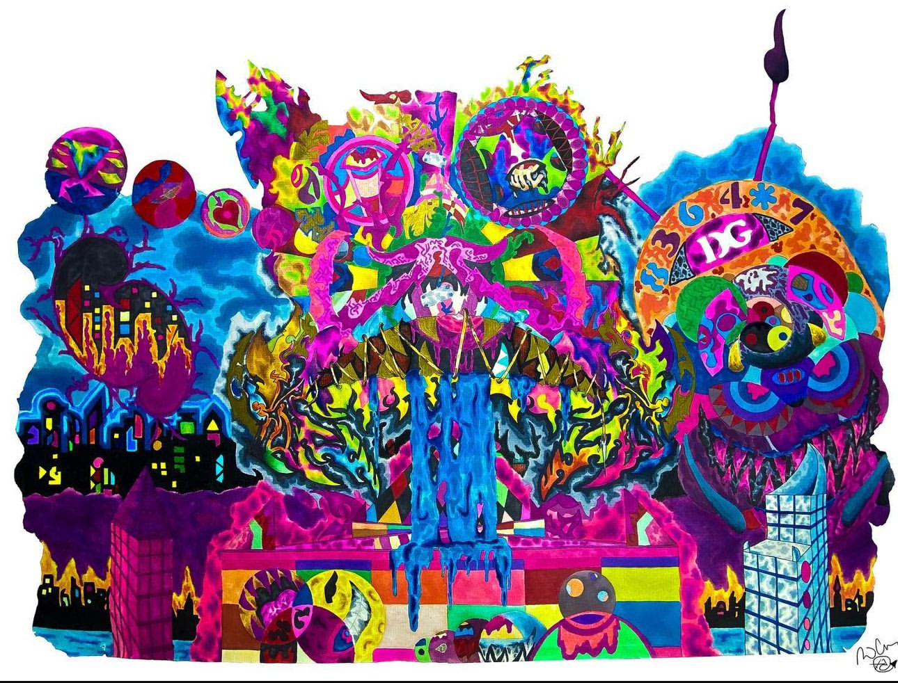

Introduction

Welcome! This site is dedicated to the life and passions of Daniel Gamboa, a 33-year-old artist with a profound love for graphic design and artwork. From his early days of doodling to professional exhibitions, Daniel's journey in the art world has been nothing short of inspiring. Explore to learn more about his life, interests, and artistic endeavors.